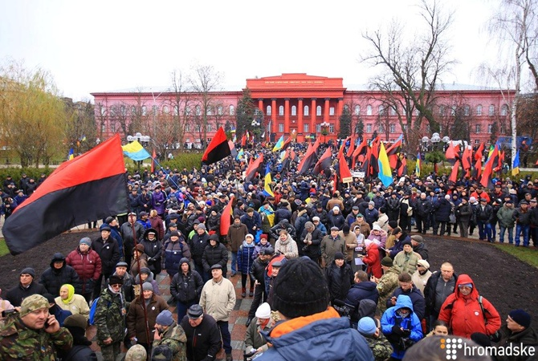

Сторонники Саакашвили устроили очередной марш протеста в Киеве [видео]
Фото: Hromadske
Днем 10 декабря в украинской столице проходит очередной марш протеста, организованный сторонниками экс-президента Грузии Михаила Саакашвили. Акция транслируется в прямом эфире в сети.
На видео видно, что на улицы вышли люди с флагами Украины, а также с красно-черными флагами. Некоторые пришли с портретами Саакашвили.
Протестующие собрались в парке Шевченко и отправятся к Майдану Независимости, где пройдет митинг. Дальнейшие действия участников марша пока неизвестны.
Ровно неделю назад в Киеве уже проходила подобная акция. Последствиями протестов стал арест Саакашвили и блокировка телеканала NewsOne, который транслировал марш в прямом эфире. Впрочем, обвинения ГПУ в адрес политика не связаны с маршем, а участники блокировки телеканала говорят, что пришли под стены NewsOne по другим причинам.
Саакашвили протестует из СИЗО
Сам Михаил Саакашвили накануне был задержан правоохранителями и находится в СИЗО на Аскольдском переулке. Вскоре адвокат зачитал письмо от Михаила Саакашвили, в котором тот сообщил о том, что он объявляет голодовку и призывает митингующих прийти на ранее запланированный марш 10 декабря на 13.00 в парке Тараса Шевченко.
ЧИТАЙТЕ ТАКЖЕ
До свидания, наш неласковый Миша
Мавр сделал свое дело, мавр может уходить. Такого мнения, по словам Михаила Саакашвили, придерживались на Банковой, когда отправляли его в отставку. В своих многочисленных интервью Саакашвили прямым текстом намекал, что когда Петр Порошенко пригласил его стать главой Одесской ОГА, то поставил перед ним конкретную задачу - подпилить ножки премьерского кресла Арсения Яценюка.